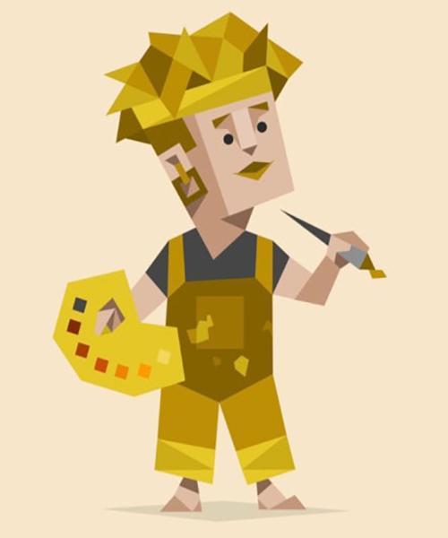

HTML / CSS / JavaScript
Figma / Photoshop / Illustrator
Git / GitHub
🍜 음식
🎨 색깔
"노랑의 따뜻함과 초록의 편안함,
그 두 가지 색처럼 저도 잔잔하고 생기 있는 걸 좋아해요.
좋아하는 음식은 면과 고기!
특히 매운 떡볶이와 얼얼한 마라탕은 저만의 스트레스 해소법이에요"
✨ISFP✨
호기심 많은 예술가 🌿
작은 디테일도 놓치지 않고,
사용자 입장에서 한 번 더 고민합니다.
새로운 기술, 다양한 피드백을
받아들이고 빠르게 흡수합니다.
디자인 감각과 퍼블리싱 스킬을 갖춘
웹 퍼블리셔로 성장하고 있습니다.
“사용자가 편안함을 느낄 수 있는
감성적인 화면을 만드는 퍼블리셔.”